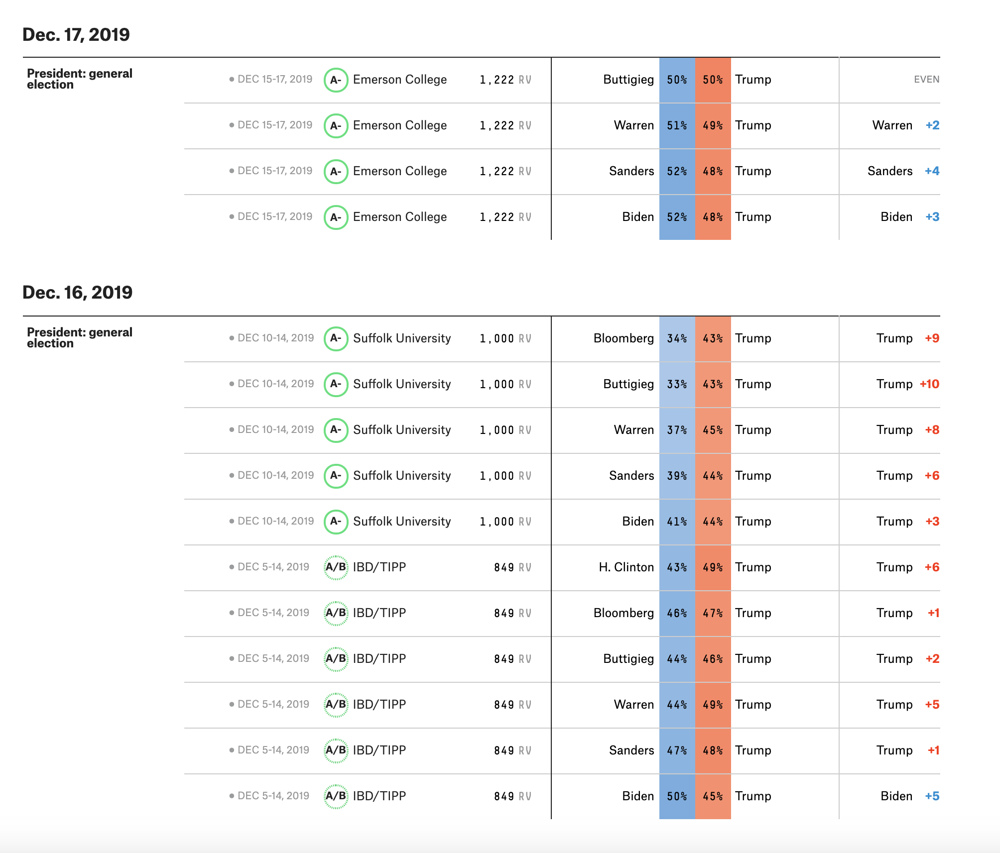

New York Times
Click Here to review the original article
Two small but important shifts have taken place in our polling average over the last week: Bernie Sanders has overtaken Elizabeth Warren to claim second place. And Michael R. Bloomberg has begun to register in the national polls.
When we say the shifts are small, it is because they truly are. Mr. Sanders has gained very incrementally, while Mr. Bloomberg has jumped from nowhere to a 4 percent average in national polls. The other leading candidates — Ms. Warren, Joseph R. Biden Jr. and Pete Buttigieg — have held more or less steady.
Still, these developments look like more than random wobbling in national polls. By overtaking Ms. Warren by even the slightest margin, Mr. Sanders appears to have solidified his political recovery, dispatching the speculation from early in the fall, after his heart attack, that his candidacy might disintegrate altogether. And he appears to be stronger in the early states, vying for first place in Iowa and New Hampshire and seemingly competitive in Nevada, where polling has been sparser.
By amassing some meaningful support in the national polls so quickly, Mr. Bloomberg has shown the power of his wealth and large-scale advertising. The message he is delivering on television and online has plainly found an audience, even if it is a modest one so far. It may not be a coincidence that Mr. Buttigieg’s rise in national polls leveled off just as Mr. Bloomberg — a mayor with appeal to political moderates — began bombarding the airwaves.